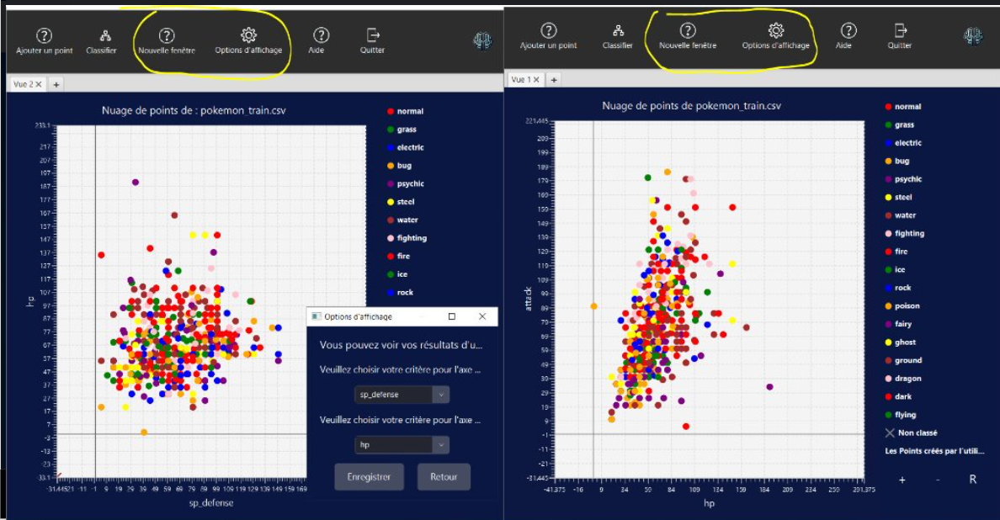
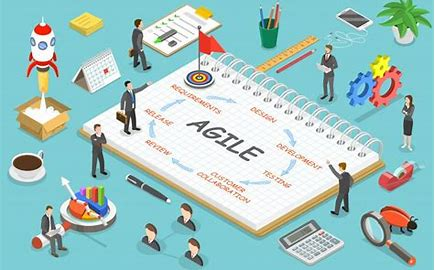
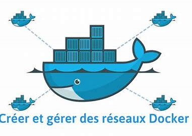
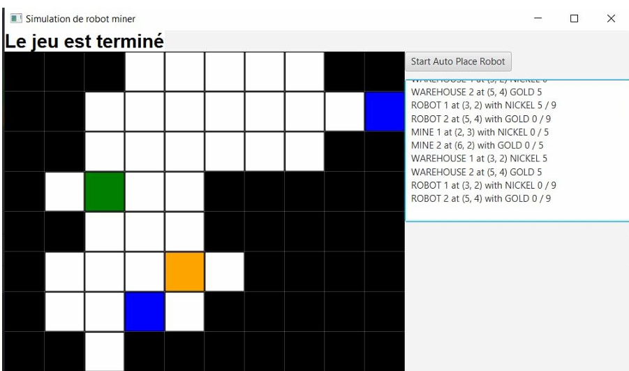
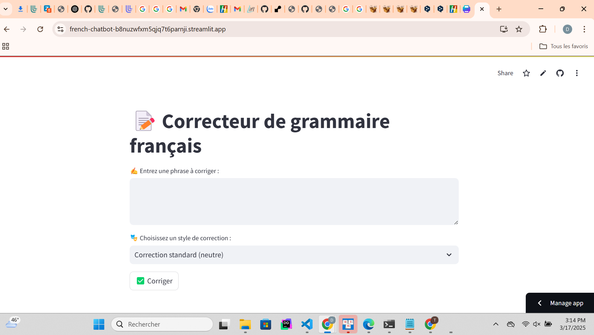
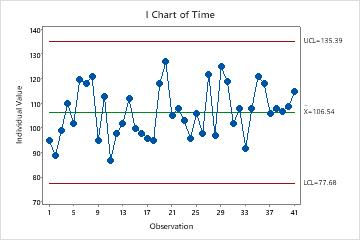
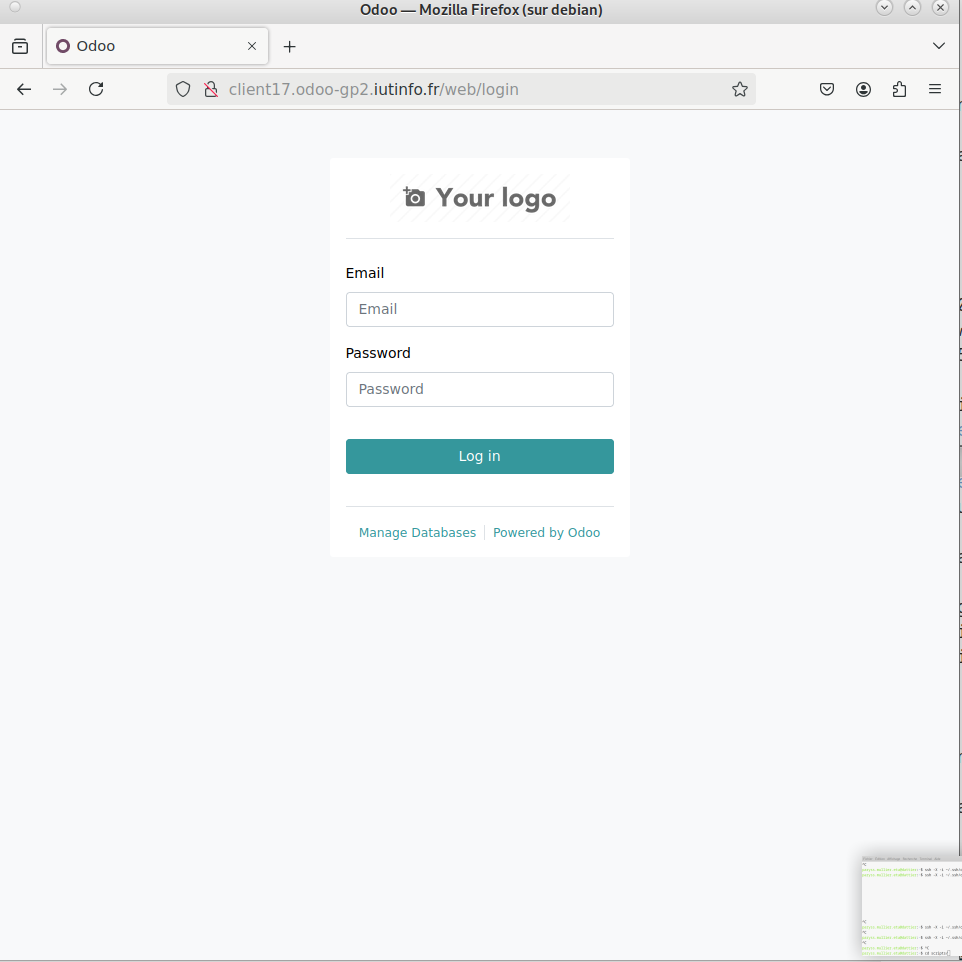

À propos de moi
Actuellement en 3ème année de BUT Informatique à l'IUT de Lille (Villeneuve d'Ascq), je poursuis une spécialisation sur le déploiement d'applications sécurisées, les architectures cloud et la supervision des infrastructures. Mon parcours intègre des projets concrets (robotique, formation DevOps, traitement de données) et des stages en entreprise avec une très bonne appréciation de la commission de poursuite d’études.
J’ai réalisé deux stages DevOps complémentaires en 2025, où j’ai automatisé pipelines CI/CD, déployé des clusters Kubernetes, intégré des outils de sécurité et assuré la montée en compétence d’équipes sur GitLab CI/CD, Jenkins, Docker et Terraform. Je recherche maintenant une alternance ou un stage en infrastructure, cloud native ou cybersécurité.
Langues
Vietnamien
Langue Maternelle
Français
DELF C2
Anglais
Niveau B2
Passions
Jouer de la guitare
Passion pour la musique acoustique et électrique.
Jouer au basket
Rester en forme tout en jouant en équipe.
Faire des tours de magie
Créer des moments impressionnants avec des illusions.
Compétences
Monitoring & Observabilité
DevOps & Infrastructure
Programmation & Backend
Réseaux & Sécurité
Soft Skills
Adaptabilité
Empathie & Communication
Gestion du Stress
Persévérance
Rigueur
Créativité
Mon Parcours
Expériences Professionnelles
Stagiaire DevOps Junior - Airbus Defence and Space
Mars 2025 - Juillet 2025- Création et optimisation de pipelines CI/CD (GitLab CI, Jenkins).
- Déploiement de conteneurs et services (Docker, Kubernetes, Terraform, Ansible).
- Participation à la sécurisation de flux et à l'automatisation des tests d'intégration.
Stagiaire DevOps (Dev applicatif + CI/CD) - CMC TI Hue Group
Avril 2025 - Juillet 2025- Développement Java Spring Boot et tests (JUnit, Mockito, JaCoCo).
- Automatisation de déploiement et pipelines GitLab CI/CD, gestion de CI multi-projets.
- Conception d'une architecture Nginx + PostgreSQL avec surveillance et sécurité.
Projets Informatiques

Application de Classification des Données
Objectif : Développer un outil de chargement et affichage interactif des données.
- Gestion multi-vues
- Algo k-NN pour classifier les données
Technologie : Java, JavaFX, JUnit, Maven,StarUML,GitHub

Projet Agile
Objectif : Gestion de projet itératif avec Scrum.
- Création d'un jeu en Java
- Gestion avec la méthodologie Scrum
Technologie : Java, JUnit, GitHub

Installation de Services Réseaux
Objectif : Configuration d'un serveur web déployé sur un réseau local.
- Configuration Apache et SSH
- Déploiement avec Docker
Technologie : Apache, Docker

Robo Miner
Objectif : Simulation de robots pour extraire des minerais dans un monde virtuel.
- Programmation de robots automatisés
- Interactions graphiques avec JavaFX
Technologie : Java, JavaFX, JUnit,StarUML,GitHub

Gen AI – Grammar Correction and Expression Clarification in French
Objectif : Développement d'une API d'IA générative pour la correction grammaticale et l'adaptation du ton en français.
- Affinage d'un modèle Gen AI pour améliorer la correction grammaticale et l'adaptation du ton (formel, courant, familier).
- Optimisation du modèle pour améliorer la qualité et la cohérence des corrections grâce à une gestion efficace des tokens.
- Conception de l'UX/UI avec Streamlit pour une approche low-code.
Technologies : Python, FastAPI, OpenAPI, Streamlit, Docker, Kubernetes, GCP

Exploitation d'une Base de Données
Objectif : Conception et exploitation d'une BDD pour une usine de production.
- Programmation des cartes de contrôle
- Analyse statistique des performances
Technologie : PostgreSQL, Python,Jupiter

Déploiement Automatisé d’Odoo Multi-Clients
Objectif : Automatiser le déploiement sécurisé d’instances Odoo pour différents clients.
- Création de 3 VM (PostgreSQL, Odoo, Sauvegarde) via script
- Déploiement d’Odoo par client avec base dédiée
- Accès par sous-domaine avec reverse proxy Traefik
- Script de sauvegarde automatique avec rsync
Technologies : Bash, Docker, PostgreSQL, Traefik, VBoxManage
Contactez-moi
Ou téléchargez directement mon CV :
Télécharger mon CVCode Source
Vous pouvez explorer le code source de cet ePortfolio sur mon repo GitHub.
Voir le code source sur GitHub